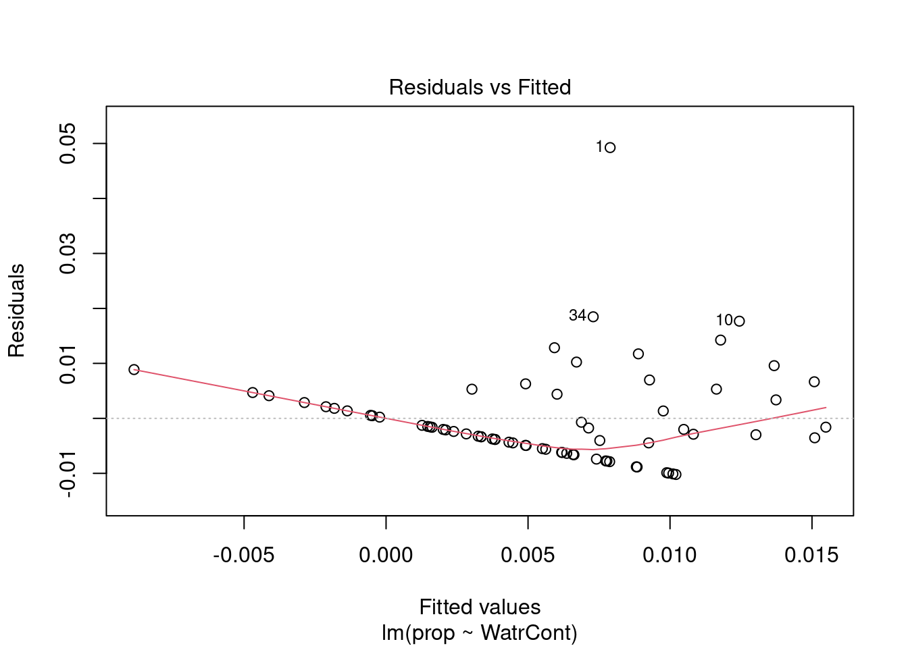
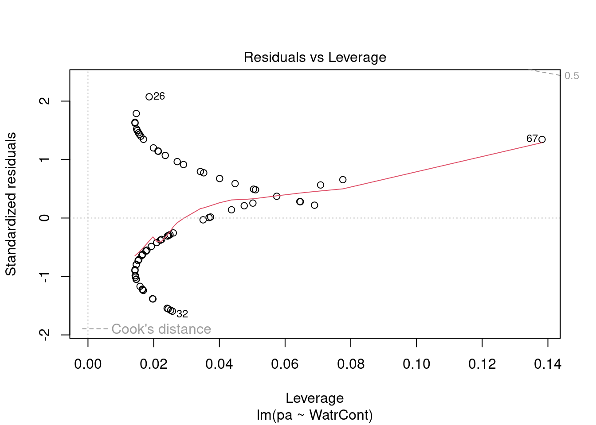
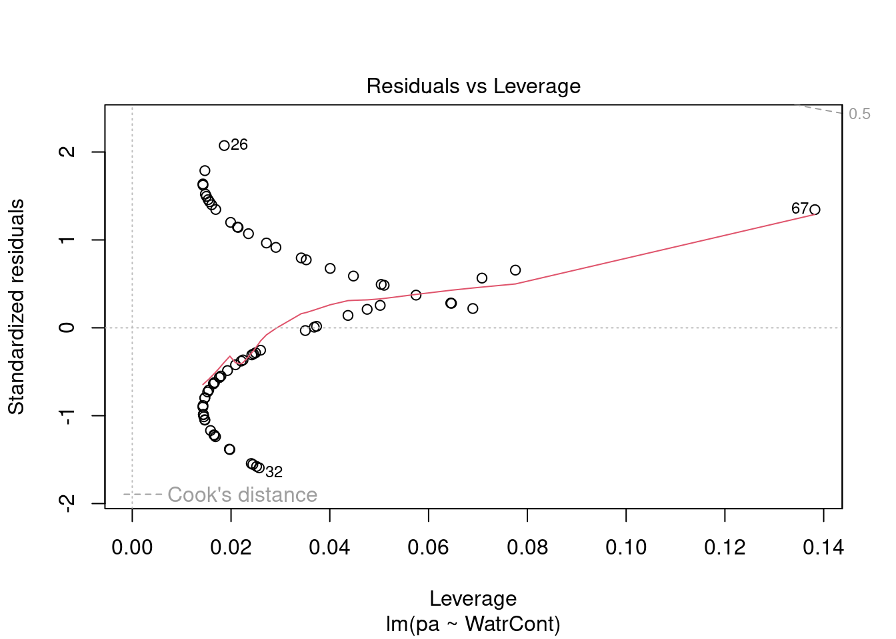
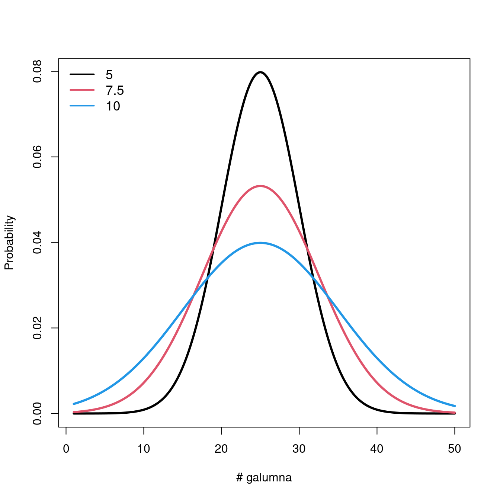
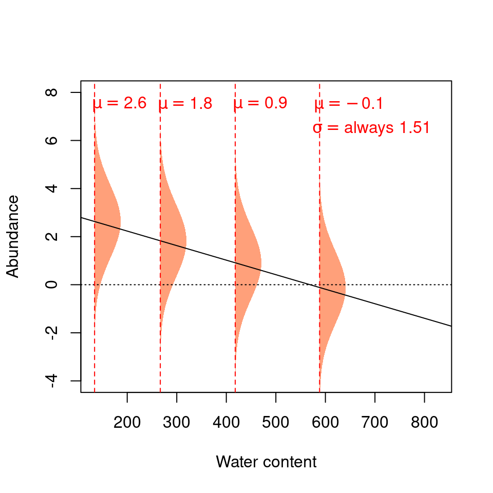

Chapter 5 Recalling linear models: assumptions
Let us validate these models to confirm that the assumptions of linear models are being respected, starting with the abundance model.
# Plot the abundance model
plot(Galumna ~ WatrCont, data = mites)
abline(lm.abund)
The model does not fit well. It predicts negative abundance values when WatrCont exceeds 600, which does not make any sense. Also, the model does poorly at predicting high abundance values at low values of WatrCont.
We can also check the model diagnostic plots:
# Diagnostic plots
plot(lm.abund)


Diagnostic plots show that the data/model violate assumptions of homogeneity of variance (the graph on the left shows that residuals are larger at higher fitted values) and normality (the graph on the right indicates that residuals are not distributed as expected from a normal distribution, i.e. many points are far from predicted values given by the dotted line). Therefore, we need to reject this model, and cannot use it to conclude that Galumna abundances vary as a function of water content.
The diagnostic plots for the presence-absence model and the proportion model also indicate that these models are also inappropriate:
# Plot the proportion model
plot(prop ~ WatrCont, data = mites)
abline(lm.prop)
# Diagnostic plots
plot(lm.prop)


# Plot the presence/absence model
plot(pa ~ WatrCont, data = mites)
abline(lm.pa)
# Diagnostic plots
plot(lm.pa)

 

Let us take a step back here and review the assumptions of linear models, and where they come from. Remember our simple linear model?
\[Y_i = \beta_0 + \beta_1X_i + \varepsilon\]
The last entry \(\varepsilon_i\) is important. This is where assumptions of normality and homoscedasticity originate. In linear models, the residuals \(\varepsilon_i\) (the distance between each observation and the regression line) can be predicted by drawing random values from a normal distribution.
Recall that all normal distributions have two parameters, \(\mu\) (the mean of the distribution) and \(\sigma^2\) (the variance of the distribution). In a linear model, \(\mu\) changes based on values of \(X\) (the predictor variable), but \(\sigma^2\) has the same value for all values of \(Y\). Our simple linear can also be written as this:
\[Y_i \sim N(\mu = \beta_0 + \beta_1 X_i +\varepsilon, \sigma^2)\]
with \(N(\cdot)\) meaning that \(Y_i\) is drawn from a normal distribution with parameters \(\mu\) (mean; which depends on \(x_i\)) and \(\sigma\) (variance; which has the same value for all \(Y_i\)s).
Let us take a look at what happens to the distribution when we vary the parameters \(\mu\) and \(\sigma\).
Varying \(\mu\) while \(\sigma = 5\) shifts the mean of the distribution.

If we keep \(\mu = 25\), varying \(\sigma\) changes the shape of the distribution, where smaller \(\sigma\) (low variance) means there is higher probability around the mean, while larger \(\sigma\) spreads out the probabilities across the full range of values.

5.1 Model prediction
When the assumptions of the linear model are not met, model prediction becomes problematic. Let us work through an example to demonstrate some of the problems that arise from a poorly fitted model.
Remember that when we predict, we aim at estimating the unknown coefficients \(\beta_0\) and \(\beta_1\) so that a line effectively predicting every value of \(Y\) as a function of \(X\) can be drawn!
\[Y_i \sim N(\mu = \beta_0 + \beta_1 X_i +\varepsilon, \sigma^2)\]
Let us predict Galumna abundance at a water content = 300 using the linear model we fit above. What are the parameters of the normal distribution used to model \(Y\) when water content is \(300\)?
Let us begin by obtaining the parameters \(\mu\) and \(\sigma^2\) for a normal distribution corresponding to our equation. To obtain the coefficients from our models, we can use the function coef():
# Extract model coefficients
coef(lm.abund)## (Intercept) WatrCont
## 3.439348672 -0.006044788These coefficients would allow us to predict Galumna abundance if there was no error. However, we know that error is an irrevocable part of our model. To get our predicted values, we therefore also need to add . This is where we use the normal distribution! For \(X\) = 300, our model predicts that should follow a normal distribution with mean = 1.63. We can extract the variance (\(\sigma^2\)) from our model summary:
# Extract variance from the model summary
summary(lm.abund)$sigma## [1] 1.513531We can plug these values into the equation we just discussed above: \[Y_i \sim N(\mu = \beta_0 + \beta_1 X_i +\varepsilon, \sigma^2)\] \(\mu = 3.44 + (-0.006 \times 300) = 1.63\)
\(\sigma^2 = 1.51\)
This tells us that randomly drawn \(Y\) values when water content is \(300\) should be on average \(1.63\) and have a variance of \(1.51\). In other words, at \(x = 300\), residuals should follow a normal distribution with \(\mu = 1.63\) and \(\sigma^2 = 1.51\). At \(x = 400\), we get \(\mu = 1.02\) and \(\sigma^2 = 1.51\), etc.
At a water content of 400, residuals should follow a normal distribution with parameters \(\mu = 3.44 + (-0.006 x 400) = 1.02\) and \(\sigma^2 = 1.51\), and thereon.
Each \(Y\) value is modeled using a normal distribution with a mean that depends on \(X_i\), but with a variance that is constant \(\sigma^2 = 1.51\) across all \(X_i\) values.
We can represent these expectations like this:

The four normal distributions on this graph represent the probability of observing a given Galumna abundance for 4 different water content values.
The mean of the normal distribution varies as a function of water content (hence \(\mu\) decreases with water content), but \(\sigma^2\) is always 1.51 (i.e. the variance is homogeneous across all values of \(X\)).
Our model thus expects observations to fall within the following shaded areas. However, what happens if we add our observations to this plot?
This model seems inappropriate (!) for at least two reasons:
1. Values are on average further from the regression line at low water content values. That is, there is more residual variance around the predicted values for low values of \(X\), such that \(\varepsilon\) varies as a function of \(X\), thus violating the assumption of homoscedasticity. It makes no sense to use a constant value of \(\sigma^2\): the normal distributions used to predict \(Y\) at low values of \(X\) should ideally be wider (have a larger \(\sigma^2\)) than normal distributions used to predict \(Y\) at large \(X\) values, but linear models do not permit this.
2. The residuals do not follow a normal distribution with constant variance across all values of \(X\). The variance of the residuals’ distribution changes as a function of \(X\) (see the spread of the data points around the trend line!).
3. The predicted values do not make sense, given the observations. Our response variable is abundance, which can only take integer values. Yet, when water content is 300, the abundance value that our model predicts to be the most probable is 1.63! We know that the probability of observing 1.63 individuals at water content = 300 is actually zero, as is the probability of observing any fraction (non-integers). Our predicted values should be modelled using a distribution that only predicts integers, rather than a continuous distribution like the normal distribution. This is a very common problem, as biological data often follows one of the myriad other statistical distributions besides the normal distribution.
5.2 So, what do we do now? Transform our data?
Very often, data will not “behave” and will violate the assumptions we have seen, showing evidence for non-normality and/or heteroskedasticity.
We have been told to transform our data using logarithmic, square-root, and cosine transformations to get around these problems. Unfortunately, transformations not always work and come with a few drawbacks:
1. They change the response variable (!), making interpretation challenging;
2. They may not simultaneously improve linearity and homogeneity of variance;
3. The boundaries of the sample space change.
For instance, our simple linear model:
\[Y_i = \beta_0 + \beta_1X_i + \varepsilon\]
looks like this after the log-transformation of \(Y\):
\[E(\log{Y_i}) = \beta_0 + \beta_1X_i\]
It is, of course, much less intuitive to interpret that for every \(300\) units increase in water content, Galumna abundance takes the form of \(\log(1.63)\)…
Thankfully, the normal distribution is not our only option!